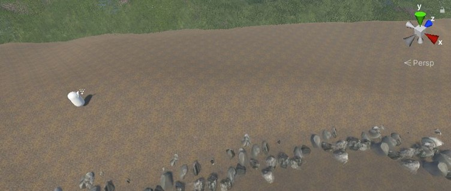
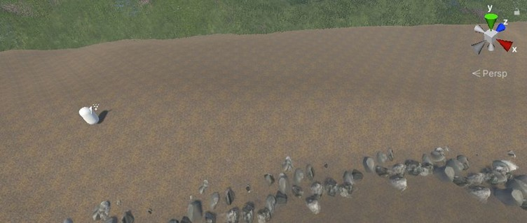
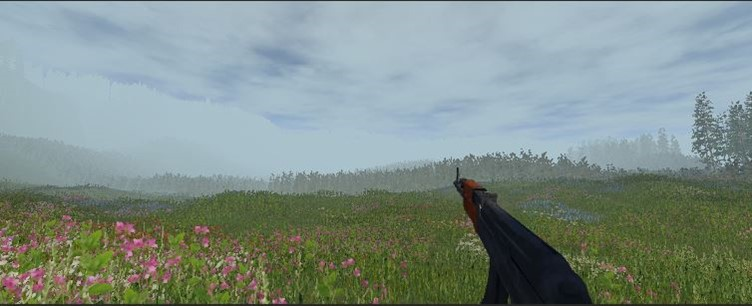
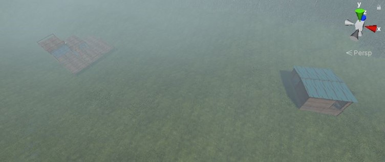
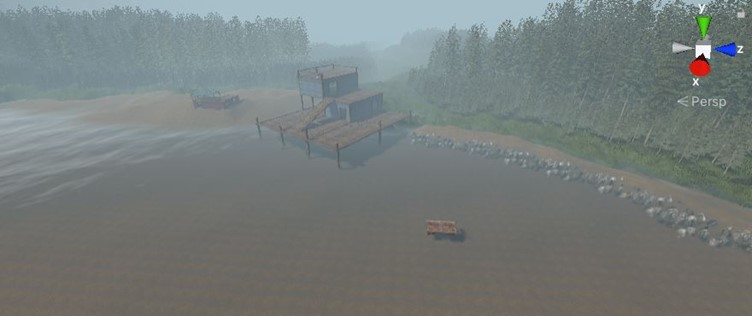
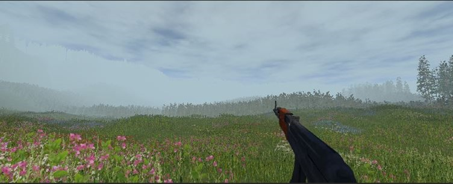
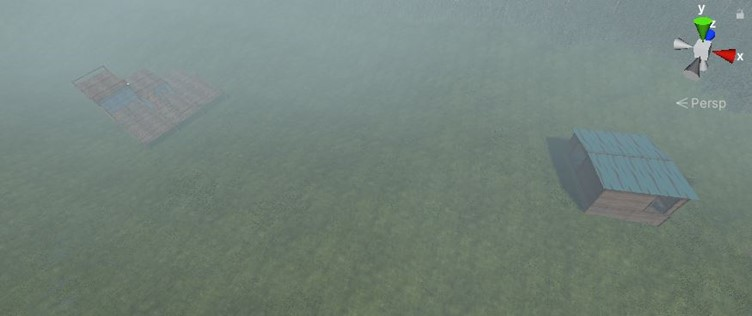
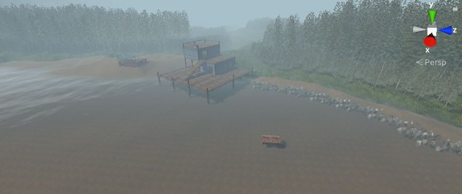
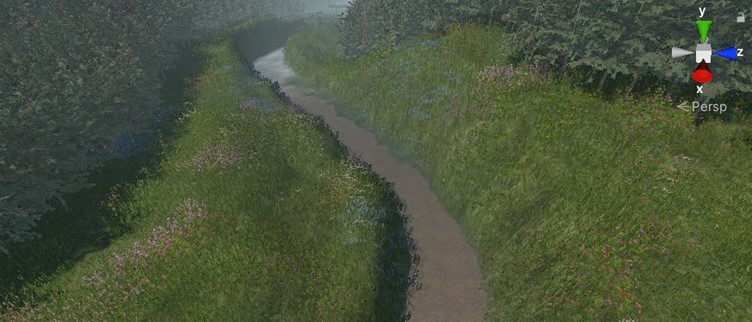
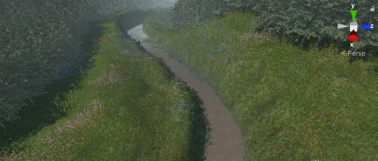

Description
Status: Finished
In 2021, I chose Game Development as one of my subjects and began working on an fps game. I didn't know anything about game design or C# for that matter, so I took a quick course on C# and began making my game. Here is an extensive timeline of the games development.
Week 1: Establishing the Core Mechanics
I began by setting up the basic framework for an FPS game. Using Unity's standard assets, I imported an FPS
player and equipped it with an AK-47 model. My first major task was to develop the gun mechanics, particularly
the raycast shooting system. I implemented raycasting to allow bullets fired from the AK-47 to detect and interact
with objects in the environment, determining whether they could take damage or were stationary, like terrain. I
also created a shootpoint for accurate bullet firing. Later in the week, I added animations for the gun's idle and
firing states, linked to the firing action triggered by the left mouse button. To enhance realism, I incorporated a
muzzle flash and AK-47 sound effects each time the gun fired. I then developed a reloading mechanism, ensuring that
when the magazine was empty, the game would deduct bullets from the total available and reload accordingly. This
system included conditions for when bullets ran out entirely, preventing the firing animation from playing.
Week 2: Refining Mechanics and Environment Creation
I focused on enhancing the realism of the gameplay. I wrote a new C# script for "WeaponSway," which added a
delay in the weapon's movement when the character turned, creating a more natural feel. I also began working on
the game's environment but faced challenges due to hardware limitations. After upgrading my system's RAM, I was
able to start designing one of the maps that I planned to make.
Week 3: Environmental Detailing
I added spawn points for both teams and began refining the game's scenery. This included introducing
realistic water physics and making detailed adjustments to the environment, such as placing buildings,
riverside rocks, and waterfalls. These small details significantly enhanced the realism of the game world,
making it more immersive.
Week 4: Impact and Visual Feedback
I continued to improve the weapon mechanics by adding visual effects for when bullets hit various surfaces.
I programmed a flare animation to play whenever a bullet struck an object, simulating the real-world impact of
bullets. Additionally, I implemented a system where bullet holes would appear on surfaces where bullets landed,
adding to the game's realism.
Week 5: Scenery Expansion
I expanded the game's scenery, focusing on natural elements like riverbeds and beaches. Drawing inspiration from
real-world locations, I made adjustments that improved the overall appearance of the environment. These changes
helped compensate for the game's modest graphics by leveraging strong scenic design.
Week 6: Aligning Environment with Story
With the game's story taking shape, I had to revise some of the environmental designs to match the new narrative.
This included building a fortress for the enemy team and tweaking other aspects of the scenery to better fit the
game's mechanics and storyline.
Week 7: Continued Environmental Adjustments
I added additional features to the environment, such as a second waterfall that fed into the riverbed, enhancing
the natural landscape. Tutorials on creating realistic scenery proved invaluable during this period, helping me
elevate the quality of the game's visuals despite limited resources.
Week 8: Vehicle Mechanics and Story Integration
The game's story rewrite introduced new gameplay mechanics, including the addition of a vehicle objective.
I sourced a 3D car model and wrote a "carController" script to handle its mechanics, including colliders, wheel
functions, lighting effects, particles for skid marks, and sound effects. This car became a central part of the
game’s objectives, requiring significant coding and problem-solving.
Week 9: Terrain Optimization
This week was focused on refining the terrain to ensure smooth gameplay. I worked on evening out the terrain to
prevent vehicles from getting stuck, which would otherwise cause unfair gameplay scenarios. Learning how to
effectively use Unity's terrain tools was crucial in overcoming the challenges I faced during this phase.
Week 10: Testing and Optimization
The week was dedicated to testing the game’s performance. Despite running at a low frame rate due to hardware
constraints, the game’s mechanics were functioning as intended. I realized the importance of optimization and
future-proofing the game to ensure it could run smoothly with multiple players, emphasizing the need for further
development and refinement.
After 10 weeks of development, I ended the project abruptly as the semster was ver and moved on to bigger and better project and learnt from the mistakes I made in this project. Most of my project files and code have been lost. However, I was able to salvage a bit of my code that I used for my weapons. More details of my project can be found on my GameDev Journal.
Weapon Code GameDev JournalProject Gallery

 

 





 
